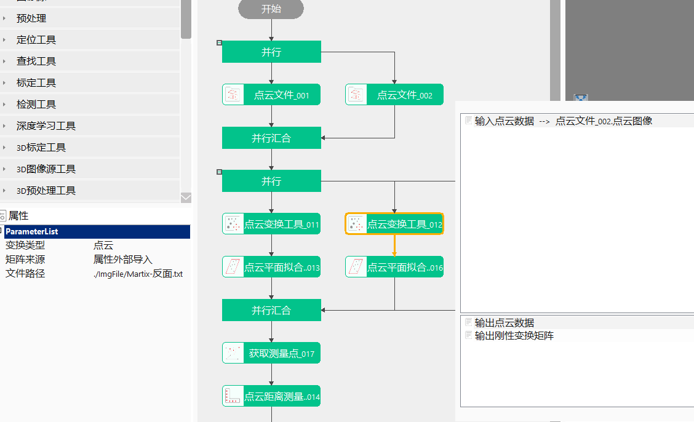

点云变换工具根据内部或外部输入的刚体变换矩阵对输入的点云数据、长方体、坐标系、三维点集、向量进行空间变换，从而完成后期尺寸的测量。

在3D测量中，点云变换应用较为广泛，如手机中框检测，厚度测量、高度测量等项目中。
step1：添加点云文件、点云变换工具，并双击打开工具参数链，链接点云文件，如图3-1所示；
step2：根据矩阵来源选择不同方式获取变换矩阵，如点击工具属性“文件路径”，导入点云变换矩阵，然后点击运行该工具；

无
| 参数名称 | 参数说明 |
|---|---|
| 输入点云数据 | 输入待变换的点云图像 |
| 输入长方体 | 输入待变换的长方体 |
| 输入坐标系 | 输入待变换的坐标系 |
| 输入三维点集 | 输入待变换的三维点集 |
| 输入向量1 | 输入第一个向量 |
| 输入向量2 | 输入第二个向量 |
| 刚性变换矩阵 | 其他工具输出的变换矩阵：3×4矩阵 |
| 参数名称 | 参数说明 |
|---|---|
| 变换类型 | 支持点云、长方体、坐标系、三维点集、向量 |
| 矩阵来源 | 包括三种：数据链接，属性外部导入和高级界面设置 |
| 文件路径 | 指点云变换矩阵文件路径 |
高级界面可以用于设置矩阵如下：
| 名称 | 参数描述 |
|---|---|
| 矩阵 | 在高级界面中输入变换矩阵 |
| 参数名称 | 参数说明 |
|---|---|
| 输出点云数据 | 输出变换后的点云数据 |
| 输出长方体 | 输出变换后的长方体 |
| 输出坐标系 | 输出变换后的坐标系 |
| 输出三维点集 | 输出变换后的三维点集 |
| 输出刚性变换矩阵 | 输出刚性变换矩阵 |
| 参数名称 | 参数说明 |
|---|---|
| 输出点云数据 | 输出变换后的点云数据 |
| 输出长方体 | 输出变换后的长方体 |
| 输出坐标系 | 输出变换后的坐标系 |
| 输出三维点集 | 输出变换后的三维点集 |
| 输出刚性变换矩阵 | 输出刚性变换矩阵 |
| 执行时间 | 工具执行时间 |
| 执行结果 | 工具执行结果 |
参见“\Samples\3D\点云\点云变换.gvp”。
无